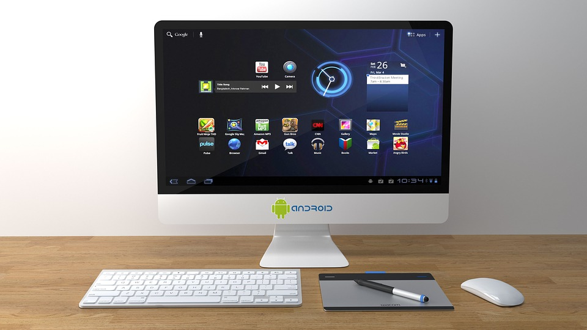

How to Backup Android Phone

The first mobile phone was made in 1973 but it was a basic device that could just send and receive voice calls. Now, we are living in the 21st century and everyone owns a smartphone. This is because smartphones have many advantages like web surfing, camera, instant communication, productivity apps, entertainment, education, GPS(Global Positioning System), and privacy etc. These days smartphones are an important part of our life as our smartphone contains our valuable emails, videos, photos, documents, and contacts.
A smartphone contains your important data and losing the data stored in your smartphone could be a disaster for you. Therefore it's very important for you to backup your Android Phone. A few years ago there was a time when backing up an Android Phone was very arduous but these days backing up an Android Phone is very easy. There are many ways through which you can you easily backup your Android Phone and be free of worries because even if something does transpire to your Android Phone, you won't lose any of your photo, video etc.
It's your choice whether you backup through Google, your computer, or through any third-party software, here are some resources through which you can easily backup your Android Phone or tablet.
How to Backup Android Settings
Here's how to backup Android Settings:
-
Open your Android Menu and tap on Settings to open device settings.

-
Search and tap on Cloud and Accounts and then tap on Backup and restore.

-
Now, you have to enable both Back up my data and Automatic restore.
-
Tap on Backup account and select the account on which you want to backup your Android Settings.
Though the method to Backup Android Settings may slightly differ between Android Devices yet the process is mostly identical. The above example is for Samsung Galaxy S6. This way Google will automatically backup your settings to your Google account.
How to Backup Android Phone to PC
Here's how to backup Android to PC:
-
Plug your Android Phone into your PC via a USB Cable.
-
On Windows, go to My Computer and open your Android Phone's storage which will show up as an external hard drive.
- On Mac, download Android File Transfer for backup.
- Select the files that you want to backup and drag them into any folder on your Computer.
If you are tired of manually doing it by dragging each file from your Android Phone storage to your computer then you can also let Google backup your Android Phone.
How To Backup Android Phone To Google
You can backup your data from Android Device to your Google Account and you can also restore your backed-up data to any another Android device or to your original Android Device. First, we'll discuss how to backup photos and videos to Google.
Here's how to backup Android Phone to Google:
- Open the Google Photos app on your Android Phone.
- Sign into your google account if you aren't already signed in.
-
Open the Menu and tap on Settings.
-
Tap on Backup & sync.
-
Enable Backup & sync.
Now, we'll discuss how to upload files and folders to Google Drive. Google Drive lets you store your files in the cloud storage. Follow the instructions below to manually upload files and folders.
- Open the Google Drive app on your Android Phone.
-
Tap on Add '+' button.
-
Tap on Upload.
- Select the files that you want to backup.
- That's it. You can view the uploaded files in My Drive.
That is all. You have succeeded in learning how to backup Android Phone. If you have any questions or queries regarding this article, feel free to ask us in the comments section. You can also contact us on Facebook.